Feature matrix shape: (150, 2)
Target shape: (150,)Decision Trees from First Principles with pandas and scikit-learn
Matteo Francia
DISI — University of Bologna
m.francia@unibo.it
DISI — University of Bologna
m.francia@unibo.it
Decision Trees from First Principles with pandas and scikit-learn
A 3-hour hands-on classification lab
Scope: train and study single decision-tree classifiers only.
Learning objectives
By the end of the lab, you will be able to:
- Train a
DecisionTreeClassifierwith a reproducible train/test workflow. - Explain what a tree level (depth) represents.
- Visualize how increasing
max_depthchanges:- the learned rules,
- train/test performance,
- tree size,
- leaf purity,
- feature importance.
- Explain and manually verify impurity-based feature importance.
- Compare the split criteria
"gini","entropy", and"log_loss". - Recognize overfitting and limitations of impurity-based importance.
Suggested timing
| Segment | Topic | Time |
|---|---|---|
| 1 | Setup and Iris visual warm-up | 35 min |
| 2 | Breast-cancer data and first tree | 25 min |
| 3 | Purity and feature importance | 35 min |
| 4 | Depth sweep: levels 1 to X | 35 min |
| Break | Short break | 10 min |
| 5 | Criteria and final diagnosis | 25 min |
| 6 | Exercises and synthesis | 15 min |
| Total | 180 min |
This notebook uses a medical dataset for teaching only. It is not a diagnostic tool.

Setup
The notebook needs:
- Python 3.10+
- pandas
- NumPy
- matplotlib
- scikit-learn
Install missing packages with:
1. Iris warm-up: levels and features - 35 minutes
Before moving to the larger breast-cancer dataset, use the Iris dataset to build geometric intuition.
We keep only two features so each trained tree can be drawn as a decision boundary:
petal length (cm)petal width (cm)
This small example makes two ideas visible:
- A tree level adds another round of yes/no splits.
- Each split is a threshold on one feature, so the boundary is made of horizontal and vertical steps.
Iris: dataset dimensions
Iris: data preview
| petal length (cm) | petal width (cm) | target | target_name | |
|---|---|---|---|---|
| 0 | 1.4 | 0.2 | 0 | setosa |
| 1 | 1.4 | 0.2 | 0 | setosa |
| 2 | 1.3 | 0.2 | 0 | setosa |
| 3 | 1.5 | 0.2 | 0 | setosa |
| 4 | 1.4 | 0.2 | 0 | setosa |
Plot the two-feature space
Each point is one flower. A decision tree trained on these two columns can only split the plane using feature thresholds.
Iris: feature-space plot
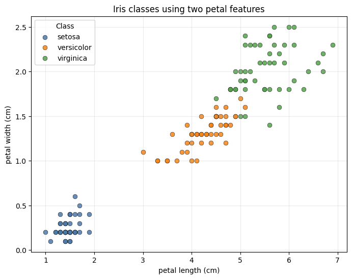
Train trees from depth 1 to X
The next chart trains one decision tree per depth. The colored background shows the class predicted for every point in the two-feature plane; the scatter points use the same colors for the observed classes.
Iris boundary: max depth 1
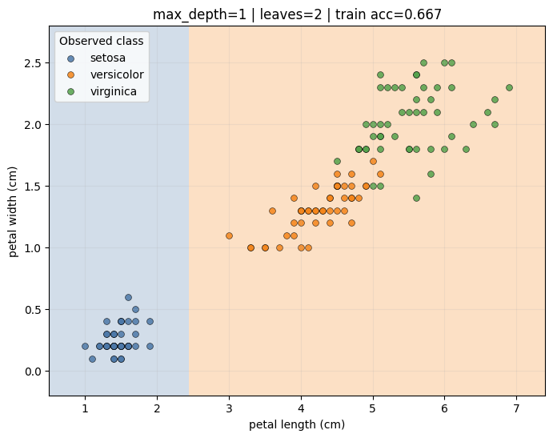
Iris boundary: max depth 2
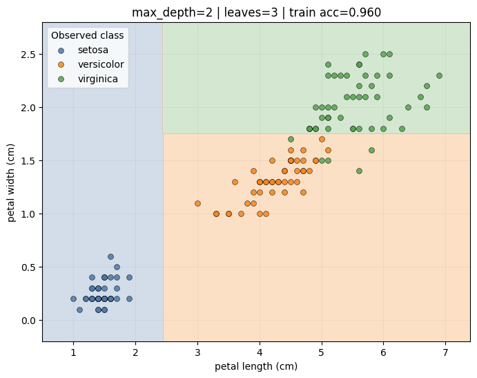
Iris boundary: max depth 3
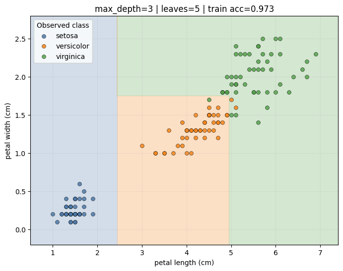
Iris boundary: max depth 4
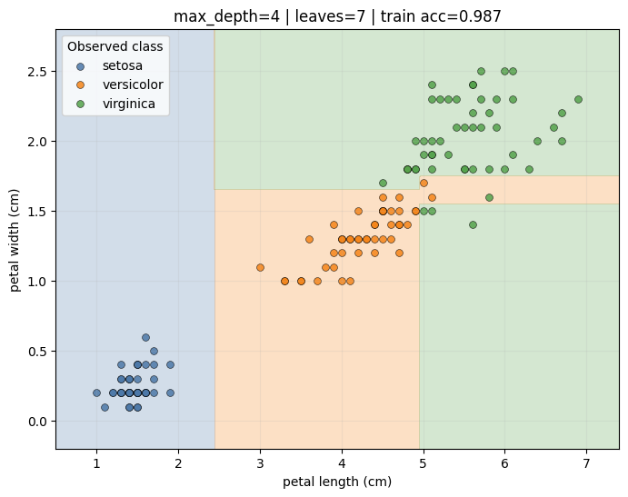
Iris boundary: max depth 5
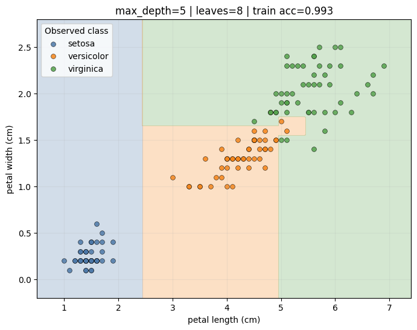
Iris checkpoint
- At depth 1, how many regions can the tree create?
- Which feature appears first in the shallow trees?
- Where does increasing depth help, and where does it start fitting small local details?
Keep these visual ideas in mind. The breast-cancer dataset has many more features, so the geometry is harder to draw, but the training mechanism is the same.
2. Load and inspect the breast-cancer dataset - 15 minutes
We use scikit-learn’s Breast Cancer Wisconsin diagnostic dataset.
- Rows: observations
- Predictors: 30 numeric measurements
- Target: malignant or benign
The loader can return pandas objects directly with as_frame=True.
Breast cancer: dataset dimensions
Feature matrix shape: (569, 30)
Target shape: (569,)Breast cancer: data preview
| mean radius | mean texture | mean perimeter | mean area | mean smoothness | mean compactness | mean concavity | mean concave points | mean symmetry | mean fractal dimension | ... | worst perimeter | worst area | worst smoothness | worst compactness | worst concavity | worst concave points | worst symmetry | worst fractal dimension | target | target_name | |
|---|---|---|---|---|---|---|---|---|---|---|---|---|---|---|---|---|---|---|---|---|---|
| 0 | 17.99 | 10.38 | 122.80 | 1001.0 | 0.11840 | 0.27760 | 0.3001 | 0.14710 | 0.2419 | 0.07871 | ... | 184.60 | 2019.0 | 0.1622 | 0.6656 | 0.7119 | 0.2654 | 0.4601 | 0.11890 | 0 | malignant |
| 1 | 20.57 | 17.77 | 132.90 | 1326.0 | 0.08474 | 0.07864 | 0.0869 | 0.07017 | 0.1812 | 0.05667 | ... | 158.80 | 1956.0 | 0.1238 | 0.1866 | 0.2416 | 0.1860 | 0.2750 | 0.08902 | 0 | malignant |
| 2 | 19.69 | 21.25 | 130.00 | 1203.0 | 0.10960 | 0.15990 | 0.1974 | 0.12790 | 0.2069 | 0.05999 | ... | 152.50 | 1709.0 | 0.1444 | 0.4245 | 0.4504 | 0.2430 | 0.3613 | 0.08758 | 0 | malignant |
| 3 | 11.42 | 20.38 | 77.58 | 386.1 | 0.14250 | 0.28390 | 0.2414 | 0.10520 | 0.2597 | 0.09744 | ... | 98.87 | 567.7 | 0.2098 | 0.8663 | 0.6869 | 0.2575 | 0.6638 | 0.17300 | 0 | malignant |
| 4 | 20.29 | 14.34 | 135.10 | 1297.0 | 0.10030 | 0.13280 | 0.1980 | 0.10430 | 0.1809 | 0.05883 | ... | 152.20 | 1575.0 | 0.1374 | 0.2050 | 0.4000 | 0.1625 | 0.2364 | 0.07678 | 0 | malignant |
5 rows × 32 columns
Breast cancer: feature summary
| dtype | missing | n_unique | mean | std | |
|---|---|---|---|---|---|
| mean radius | float64 | 0 | 456 | 14.127292 | 3.524049 |
| mean texture | float64 | 0 | 479 | 19.289649 | 4.301036 |
| mean perimeter | float64 | 0 | 522 | 91.969033 | 24.298981 |
| mean area | float64 | 0 | 539 | 654.889104 | 351.914129 |
| mean smoothness | float64 | 0 | 474 | 0.096360 | 0.014064 |
| mean compactness | float64 | 0 | 537 | 0.104341 | 0.052813 |
| mean concavity | float64 | 0 | 537 | 0.088799 | 0.079720 |
| mean concave points | float64 | 0 | 542 | 0.048919 | 0.038803 |
| mean symmetry | float64 | 0 | 432 | 0.181162 | 0.027414 |
| mean fractal dimension | float64 | 0 | 499 | 0.062798 | 0.007060 |
Breast cancer: class counts
| count | |
|---|---|
| target_name | |
| benign | 357 |
| malignant | 212 |
Breast cancer: class proportions
| proportion | |
|---|---|
| target_name | |
| benign | 0.627417 |
| malignant | 0.372583 |
Checkpoint
- Is this a classification or regression task?
- Is the target perfectly balanced?
- Why do decision trees not require feature scaling?
Suggested answers
- Binary classification.
- No. The classes are moderately imbalanced.
- Trees compare one feature with a threshold. Rescaling a feature preserves its ordering and therefore does not fundamentally change candidate partitions.
3. Create one fixed train/test split - 10 minutes
To compare depths and criteria fairly, every experiment must use the same split.
stratify=y keeps the class proportions similar in the training and test sets.
Split: class balance
| train_count | test_count | |
|---|---|---|
| malignant | 159 | 53 |
| benign | 267 | 90 |
Split: matrix shapes
Train shape: (426, 30)
Test shape: (143, 30)4. Train the first decision tree - 15 minutes
Start with a decision stump, a tree with max_depth=1.
A depth-1 classifier makes one split and has at most two leaves.
First tree: decision stump
Train accuracy: 0.9225352112676056
Test accuracy: 0.9230769230769231
Actual depth: 1
Number of leaves: 2Decision stump: tree view
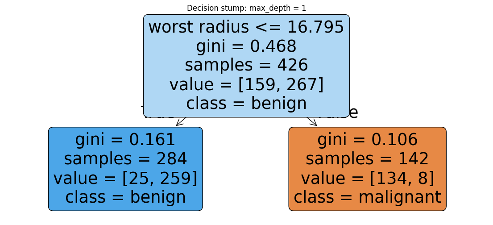
Decision stump: text rules
|--- worst radius <= 16.80
| |--- class: 1
|--- worst radius > 16.80
| |--- class: 0
5. Purity and impurity - 30 minutes
A node is pure when all its samples belong to one class.
Gini impurity
For class proportions (p_1,,p_K):
[ G = 1 - _{k=1}{K}p_k2 ]
For binary classification with positive-class proportion (p):
[ G = 1 - p^2 - (1-p)^2 = 2p(1-p) ]
Entropy
[ H = -_{k=1}^{K}p_k_2(p_k) ]
Both are:
- zero at a pure node,
- largest when the binary classes are evenly mixed,
- used to choose splits that reduce weighted child impurity.
Impurity curves
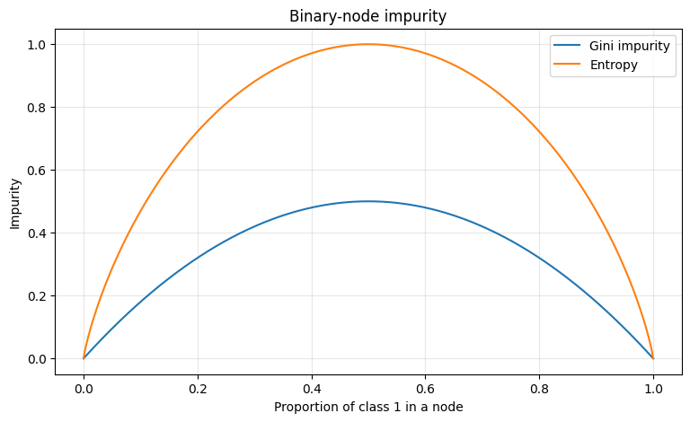
Exercise 1 — calculate impurity by hand (8 minutes)
A node contains 40 samples:
- 30 benign
- 10 malignant
Calculate:
- Gini impurity.
- Entropy.
- Whether the node is more or less pure than a 20/20 node.
Exercise: impurity by hand
Gini: 0.375
Entropy: 0.8112781244591328Weighted impurity decrease
Suppose a parent node (t) is split into left and right children.
The local weighted reduction is:
[ i(t) = i(t) - i(t_L) - i(t_R) ]
scikit-learn’s global contribution also weights by the fraction of all training samples reaching the node:
[ i(t) ]
A good split has a large positive impurity decrease.
Weighted impurity: numeric example
Local weighted impurity decrease: 0.2646. Visualize the impact of tree levels - 40 minutes
We now fit trees with max_depth from 1 to 12.
For each depth, record:
- training accuracy,
- test accuracy,
- balanced test accuracy,
- test log loss,
- actual depth,
- number of leaves,
- node count,
- mean leaf impurity,
- weighted mean leaf impurity.
The model family remains exactly the same: one DecisionTreeClassifier.
Depth sweep: metrics table
| max_depth | actual_depth | train_accuracy | test_accuracy | test_balanced_accuracy | test_log_loss | n_leaves | node_count | mean_leaf_impurity | weighted_leaf_impurity | |
|---|---|---|---|---|---|---|---|---|---|---|
| 0 | 1 | 1 | 0.9225 | 0.9231 | 0.9079 | 0.2706 | 2 | 3 | 0.1334 | 0.1425 |
| 1 | 2 | 2 | 0.9577 | 0.9091 | 0.9161 | 0.4759 | 4 | 7 | 0.1313 | 0.0661 |
| 2 | 3 | 3 | 0.9765 | 0.9441 | 0.9362 | 0.8763 | 7 | 13 | 0.1512 | 0.0386 |
| 3 | 4 | 4 | 0.9883 | 0.9441 | 0.9400 | 1.3539 | 11 | 21 | 0.0923 | 0.0202 |
| 4 | 5 | 5 | 0.9953 | 0.9371 | 0.9345 | 1.8494 | 15 | 29 | 0.0255 | 0.0082 |
| 5 | 6 | 6 | 0.9977 | 0.9371 | 0.9345 | 2.2693 | 17 | 33 | 0.0062 | 0.0044 |
| 6 | 7 | 7 | 1.0000 | 0.9231 | 0.9234 | 2.7726 | 18 | 35 | 0.0000 | 0.0000 |
| 7 | 8 | 7 | 1.0000 | 0.9231 | 0.9234 | 2.7726 | 18 | 35 | 0.0000 | 0.0000 |
| 8 | 9 | 7 | 1.0000 | 0.9231 | 0.9234 | 2.7726 | 18 | 35 | 0.0000 | 0.0000 |
| 9 | 10 | 7 | 1.0000 | 0.9231 | 0.9234 | 2.7726 | 18 | 35 | 0.0000 | 0.0000 |
| 10 | 11 | 7 | 1.0000 | 0.9231 | 0.9234 | 2.7726 | 18 | 35 | 0.0000 | 0.0000 |
| 11 | 12 | 7 | 1.0000 | 0.9231 | 0.9234 | 2.7726 | 18 | 35 | 0.0000 | 0.0000 |
Accuracy by depth
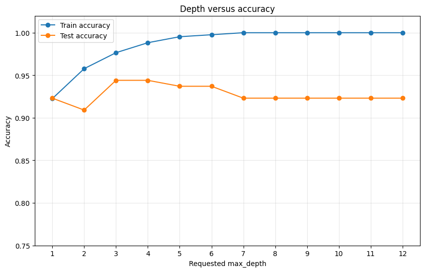
Log loss by depth
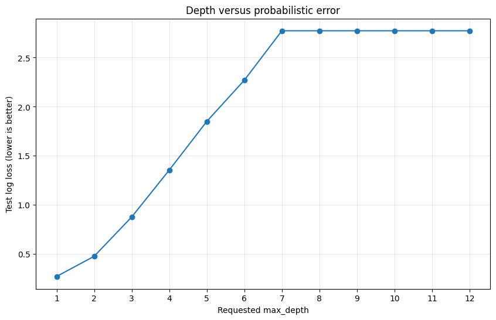
Leaf impurity by depth
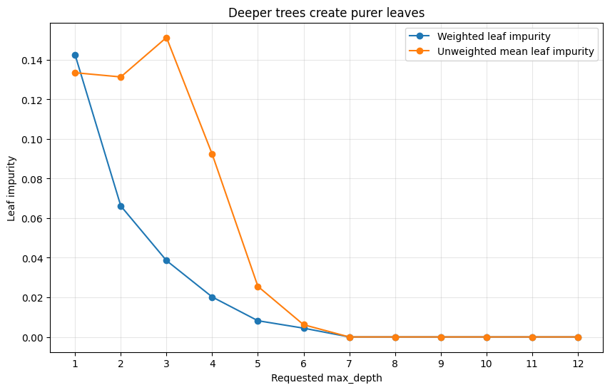
Model complexity by depth
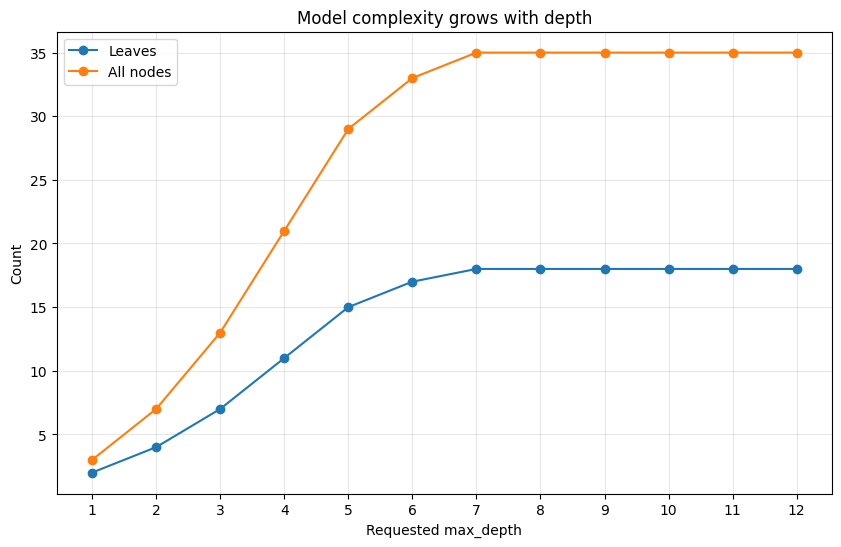
Interpretation questions
- At which depth is test accuracy highest?
- Does the depth with the purest leaves necessarily generalize best?
- At what depth does training accuracy reach 1.0?
- Why can test log loss worsen sharply even when accuracy changes little?
- Where do you see evidence of overfitting?
Best test depth
| value | |
|---|---|
| max_depth | 3.000000 |
| actual_depth | 3.000000 |
| train_accuracy | 0.976526 |
| test_accuracy | 0.944056 |
| test_balanced_accuracy | 0.936164 |
| test_log_loss | 0.876332 |
| n_leaves | 7.000000 |
| node_count | 13.000000 |
| mean_leaf_impurity | 0.151231 |
| weighted_leaf_impurity | 0.038564 |
First perfect training depth
First depth with perfect training accuracy: 7View selected tree structures
Plotting every deep tree becomes unreadable. Compare depths 1, 2, 3, and 5.
Tree structure: max depth 1
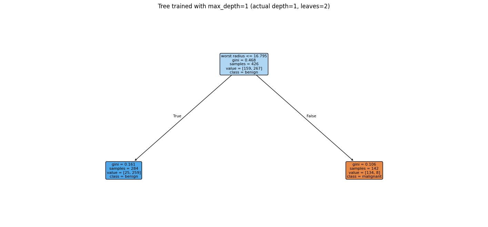
Tree structure: max depth 2
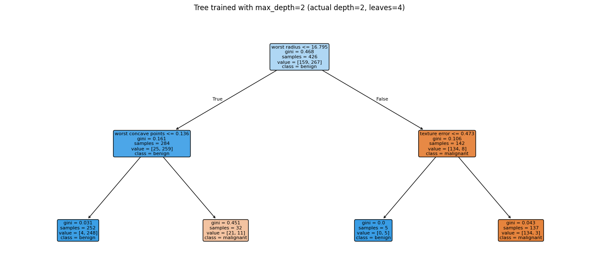
Tree structure: max depth 3
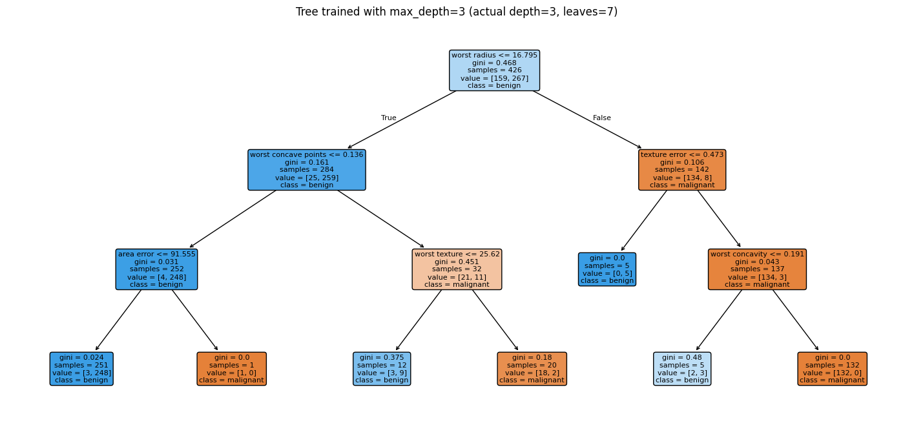
Tree structure: max depth 5
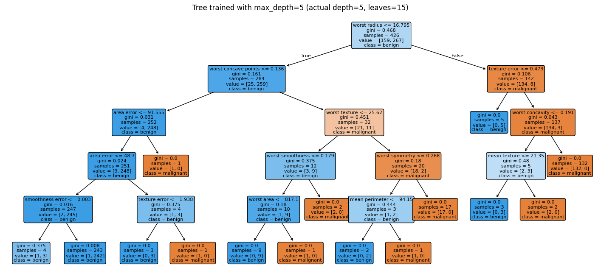
Exercise 2 — choose a depth (10 minutes)
Choose a depth for a hypothetical interpretable screening aid.
Your answer must mention:
- test performance,
- train/test gap,
- number of leaves,
- readability,
- why maximum purity is not the only objective.
Write your reasoning below.
Exercise: choose a depth
| selected_model | |
|---|---|
| max_depth | 3.000000 |
| actual_depth | 3.000000 |
| train_accuracy | 0.976526 |
| test_accuracy | 0.944056 |
| test_balanced_accuracy | 0.936164 |
| test_log_loss | 0.876332 |
| n_leaves | 7.000000 |
| node_count | 13.000000 |
| mean_leaf_impurity | 0.151231 |
| weighted_leaf_impurity | 0.038564 |
7. How impurity-based feature importance is calculated - 40 minutes
For one tree, each split node contributes importance to the feature used at that node.
For split node (t), the unnormalized contribution is:
[ N_t i(t) - N_L i(t_L) - N_R i(t_R) ]
where:
- (N_t) is the weighted number of samples at the parent,
- (i(t)) is parent impurity,
- (N_L, N_R) and (i(t_L), i(t_R)) refer to the children.
Contributions are summed by feature and then normalized so all importances sum to 1.
Therefore, a feature is important when it:
- is used in one or more splits,
- affects many training samples,
- creates a large impurity reduction.
A feature not chosen for a split gets zero impurity-based importance.
Top feature importances
| sklearn_importance | |
|---|---|
| worst radius | 0.726829 |
| worst concave points | 0.122113 |
| texture error | 0.048398 |
| worst texture | 0.033231 |
| worst concavity | 0.018188 |
| mean concave points | 0.014158 |
| area error | 0.012613 |
| mean texture | 0.012585 |
| worst symmetry | 0.011885 |
| mean area | 0.000000 |
| mean compactness | 0.000000 |
| mean smoothness | 0.000000 |
Feature importance sum
Sum: 1.0Manual importance equals scikit-learn
| sklearn_importance | manual_importance | absolute_difference | |
|---|---|---|---|
| worst radius | 0.726829 | 0.726829 | 1.110223e-16 |
| worst concave points | 0.122113 | 0.122113 | 0.000000e+00 |
| texture error | 0.048398 | 0.048398 | 0.000000e+00 |
| worst texture | 0.033231 | 0.033231 | 0.000000e+00 |
| worst concavity | 0.018188 | 0.018188 | 0.000000e+00 |
| mean concave points | 0.014158 | 0.014158 | 1.734723e-18 |
| area error | 0.012613 | 0.012613 | 1.734723e-18 |
| mean texture | 0.012585 | 0.012585 | 0.000000e+00 |
| worst symmetry | 0.011885 | 0.011885 | 0.000000e+00 |
| mean area | 0.000000 | 0.000000 | 0.000000e+00 |
| mean compactness | 0.000000 | 0.000000 | 0.000000e+00 |
| mean smoothness | 0.000000 | 0.000000 | 0.000000e+00 |
Manual importance: numerical difference
Maximum absolute difference: 1.1102230246251565e-16Inspect each split’s contribution
The following table exposes the tree’s internal arrays and computes the impurity decrease contributed by each split node.
Split contribution details
| node | feature | threshold | samples_at_node | parent_impurity | left_impurity | right_impurity | unnormalized_contribution | normalized_node_contribution | |
|---|---|---|---|---|---|---|---|---|---|
| 0 | 0 | worst radius | 16.79500 | 426 | 0.46786 | 0.16056 | 0.10633 | 138.61268 | 0.72683 |
| 1 | 1 | worst concave points | 0.13595 | 284 | 0.16056 | 0.03124 | 0.45117 | 23.28808 | 0.12211 |
| 7 | 14 | texture error | 0.47315 | 142 | 0.10633 | 0.00000 | 0.04284 | 9.22998 | 0.04840 |
| 4 | 7 | worst texture | 25.62000 | 32 | 0.45117 | 0.37500 | 0.18000 | 6.33750 | 0.03323 |
| 8 | 16 | worst concavity | 0.19070 | 137 | 0.04284 | 0.48000 | 0.00000 | 3.46861 | 0.01819 |
| 5 | 8 | mean concave points | 0.07973 | 12 | 0.37500 | 0.18000 | 0.00000 | 2.70000 | 0.01416 |
| 9 | 17 | mean texture | 21.35000 | 5 | 0.48000 | 0.00000 | 0.00000 | 2.40000 | 0.01258 |
| 6 | 11 | worst symmetry | 0.26820 | 20 | 0.18000 | 0.44444 | 0.00000 | 2.26667 | 0.01189 |
| 2 | 2 | area error | 91.55500 | 252 | 0.03124 | 0.02362 | 0.00000 | 1.94473 | 0.01020 |
| 3 | 3 | area error | 48.70000 | 251 | 0.02362 | 0.01606 | 0.37500 | 0.46068 | 0.00242 |
Top split contributions
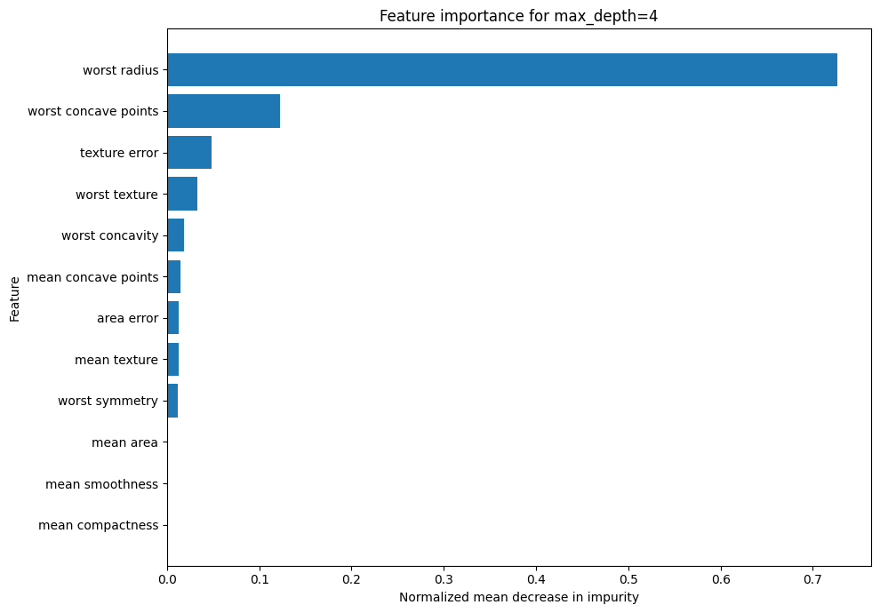
Feature importance changes with depth
Feature importance is a property of the fitted tree, not an eternal property of the dataset.
We now place the importances from each depth in a pandas table.
Feature importance over depth
| max_depth | 1 | 2 | 3 | 4 | 5 | 6 | 7 | 8 | 9 | 10 | 11 | 12 |
|---|---|---|---|---|---|---|---|---|---|---|---|---|
| worst radius | 1.0 | 0.810 | 0.758 | 0.727 | 0.708 | 0.709 | 0.695 | 0.695 | 0.695 | 0.695 | 0.695 | 0.695 |
| worst concave points | 0.0 | 0.136 | 0.127 | 0.122 | 0.119 | 0.127 | 0.117 | 0.117 | 0.117 | 0.117 | 0.117 | 0.117 |
| worst texture | 0.0 | 0.000 | 0.035 | 0.033 | 0.032 | 0.040 | 0.061 | 0.061 | 0.061 | 0.061 | 0.061 | 0.061 |
| texture error | 0.0 | 0.054 | 0.050 | 0.048 | 0.055 | 0.054 | 0.046 | 0.046 | 0.046 | 0.046 | 0.046 | 0.046 |
| worst concavity | 0.0 | 0.000 | 0.019 | 0.018 | 0.018 | 0.018 | 0.017 | 0.017 | 0.017 | 0.017 | 0.017 | 0.017 |
| mean concave points | 0.0 | 0.000 | 0.000 | 0.014 | 0.000 | 0.014 | 0.014 | 0.014 | 0.014 | 0.014 | 0.014 | 0.014 |
| worst smoothness | 0.0 | 0.000 | 0.000 | 0.000 | 0.014 | 0.000 | 0.000 | 0.000 | 0.000 | 0.000 | 0.000 | 0.000 |
| area error | 0.0 | 0.000 | 0.011 | 0.013 | 0.012 | 0.012 | 0.012 | 0.012 | 0.012 | 0.012 | 0.012 | 0.012 |
| mean texture | 0.0 | 0.000 | 0.000 | 0.013 | 0.012 | 0.012 | 0.000 | 0.000 | 0.000 | 0.000 | 0.000 | 0.000 |
| worst symmetry | 0.0 | 0.000 | 0.000 | 0.012 | 0.012 | 0.011 | 0.011 | 0.011 | 0.011 | 0.011 | 0.011 | 0.011 |
| worst area | 0.0 | 0.000 | 0.000 | 0.000 | 0.009 | 0.000 | 0.009 | 0.009 | 0.009 | 0.009 | 0.009 | 0.009 |
| mean radius | 0.0 | 0.000 | 0.000 | 0.000 | 0.000 | 0.000 | 0.008 | 0.008 | 0.008 | 0.008 | 0.008 | 0.008 |
Feature importance heatmap
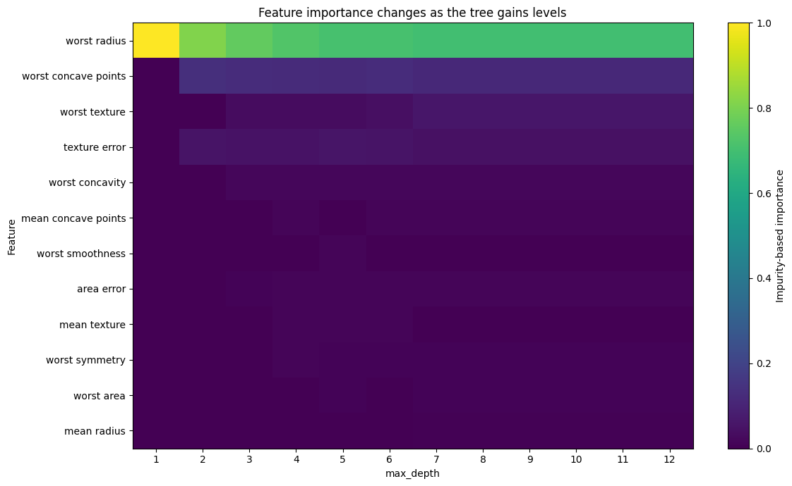
Important caveats
Impurity-based feature importance:
- is calculated from the training tree;
- can distribute importance unpredictably among correlated predictors;
- can favor features that offer many possible split points;
- does not state the direction of an effect;
- is not causal;
- can change with depth, criterion, split, or random seed.
In this lab we stay focused on tree-native impurity importance rather than introducing another model or importance algorithm.
Exercise 3 — explain zero importance (8 minutes)
Find three features with zero importance at depth 2.
For each one, answer:
- Does zero mean the feature contains no predictive information?
- Or does it mean the fitted tree did not select it?
Exercise: zero importance
Number of zero-importance features at depth 2: 27
['mean radius', 'mean texture', 'mean perimeter', 'mean area', 'mean smoothness', 'mean compactness', 'mean concavity', 'mean concave points', 'mean symmetry', 'mean fractal dimension']8. Compare purity criteria - 35 minutes
DecisionTreeClassifier currently supports:
"gini""entropy""log_loss"
For classification trees, these criteria evaluate candidate splits using class purity. We compare them while holding all other settings fixed.
Criteria comparison: first rows
| criterion | max_depth | actual_depth | train_accuracy | test_accuracy | test_balanced_accuracy | test_log_loss | n_leaves | node_count | |
|---|---|---|---|---|---|---|---|---|---|
| 0 | gini | 1 | 1 | 0.9225 | 0.9231 | 0.9079 | 0.2706 | 2 | 3 |
| 1 | gini | 2 | 2 | 0.9577 | 0.9091 | 0.9161 | 0.4759 | 4 | 7 |
| 2 | gini | 3 | 3 | 0.9765 | 0.9441 | 0.9362 | 0.8763 | 7 | 13 |
| 3 | gini | 4 | 4 | 0.9883 | 0.9441 | 0.9400 | 1.3539 | 11 | 21 |
| 4 | gini | 5 | 5 | 0.9953 | 0.9371 | 0.9345 | 1.8494 | 15 | 29 |
| 5 | gini | 6 | 6 | 0.9977 | 0.9371 | 0.9345 | 2.2693 | 17 | 33 |
| 6 | gini | 7 | 7 | 1.0000 | 0.9231 | 0.9234 | 2.7726 | 18 | 35 |
| 7 | gini | 8 | 7 | 1.0000 | 0.9231 | 0.9234 | 2.7726 | 18 | 35 |
| 8 | gini | 9 | 7 | 1.0000 | 0.9231 | 0.9234 | 2.7726 | 18 | 35 |
| 9 | gini | 10 | 7 | 1.0000 | 0.9231 | 0.9234 | 2.7726 | 18 | 35 |
| 10 | gini | 11 | 7 | 1.0000 | 0.9231 | 0.9234 | 2.7726 | 18 | 35 |
| 11 | gini | 12 | 7 | 1.0000 | 0.9231 | 0.9234 | 2.7726 | 18 | 35 |
Criteria accuracy chart
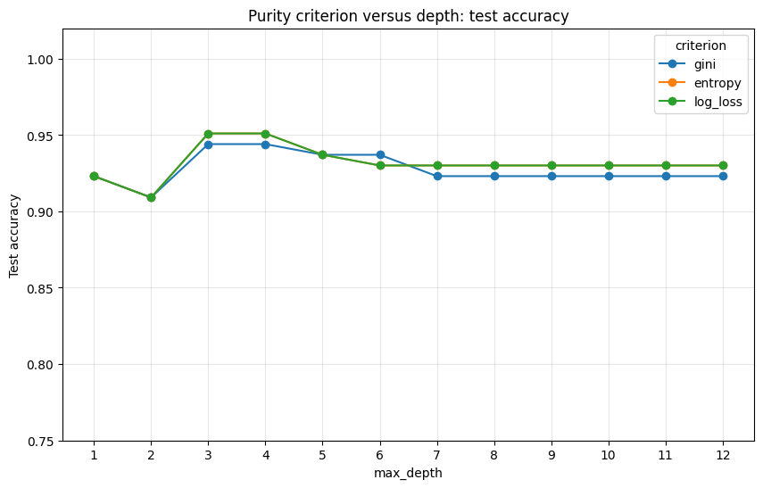
Criteria log-loss chart
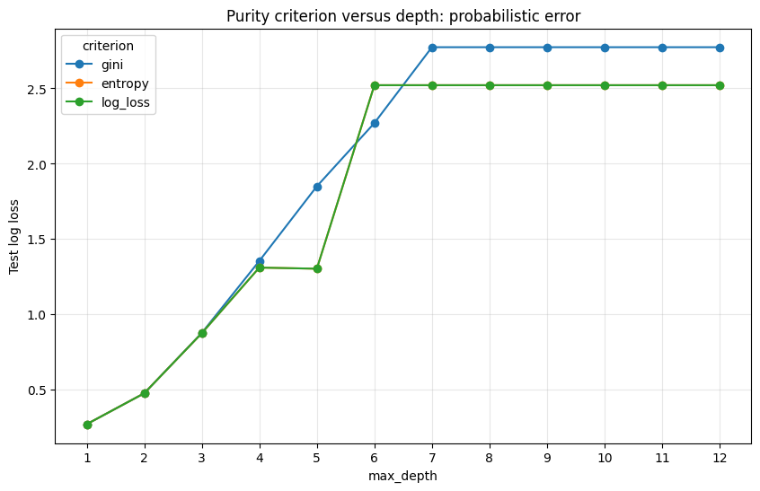
Fixed-depth criteria models
| max_depth | actual_depth | train_accuracy | test_accuracy | test_balanced_accuracy | test_log_loss | n_leaves | node_count | |
|---|---|---|---|---|---|---|---|---|
| criterion | ||||||||
| entropy | 3 | 3 | 0.9671 | 0.9510 | 0.9417 | 0.8744 | 7 | 13 |
| log_loss | 3 | 3 | 0.9671 | 0.9510 | 0.9417 | 0.8744 | 7 | 13 |
| gini | 3 | 3 | 0.9765 | 0.9441 | 0.9362 | 0.8763 | 7 | 13 |
Compare the learned root split
Even when final scores are similar, criteria may select different features or thresholds.
Criteria root split table
| root_feature | root_threshold | root_impurity | actual_depth | n_leaves | |
|---|---|---|---|---|---|
| criterion | |||||
| gini | worst radius | 16.795 | 0.467864 | 3 | 7 |
| entropy | worst radius | 16.795 | 0.953127 | 3 | 7 |
| log_loss | worst radius | 16.795 | 0.953127 | 3 | 7 |
Root rules: gini
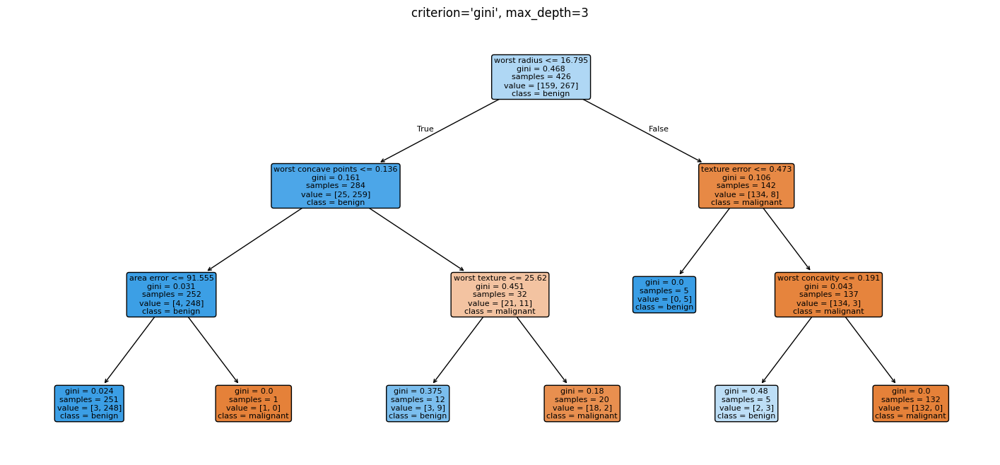
Root rules: entropy
Root rules: log_loss
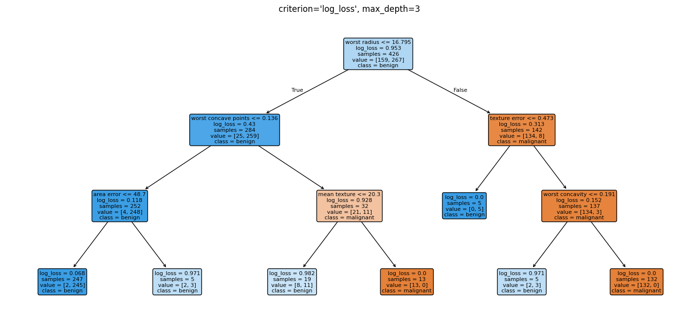
Compare feature importance across criteria
Keep depth fixed so the comparison isolates the split criterion as much as possible.
Criteria feature-importance table
| gini | entropy | log_loss | |
|---|---|---|---|
| worst radius | 0.7579 | 0.6638 | 0.6638 |
| worst concave points | 0.1273 | 0.1738 | 0.1738 |
| texture error | 0.0505 | 0.0654 | 0.0654 |
| worst texture | 0.0347 | 0.0000 | 0.0000 |
| worst concavity | 0.0190 | 0.0442 | 0.0442 |
| area error | 0.0106 | 0.0222 | 0.0222 |
| mean texture | 0.0000 | 0.0306 | 0.0306 |
| mean smoothness | 0.0000 | 0.0000 | 0.0000 |
| mean concavity | 0.0000 | 0.0000 | 0.0000 |
| mean concave points | 0.0000 | 0.0000 | 0.0000 |
| mean compactness | 0.0000 | 0.0000 | 0.0000 |
| mean area | 0.0000 | 0.0000 | 0.0000 |
Criteria feature-importance chart
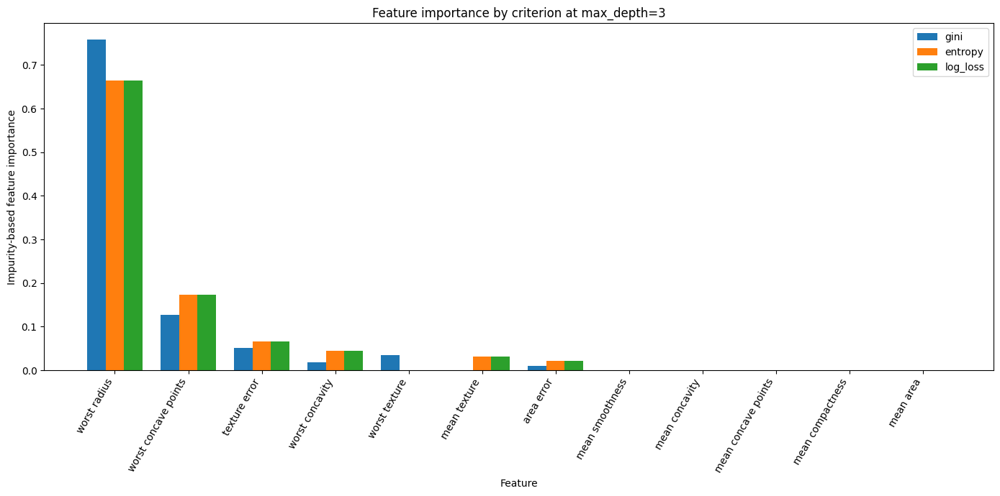
Exercise 4 — criterion conclusions (10 minutes)
Answer using evidence from the tables and plots:
- Which criterion gives the best test accuracy at depth 3?
- Do
"entropy"and"log_loss"produce the same tree here? - Does the best criterion stay best at every depth?
- Do criteria agree on the most important feature?
- Why should one avoid a universal claim that one criterion is always superior?
9. Final model diagnosis - 15 minutes
Select one depth and criterion based on your evidence.
The code below remains a single decision tree.
Final model scores
| value | |
|---|---|
| train_accuracy | 0.976526 |
| test_accuracy | 0.944056 |
| test_balanced_accuracy | 0.936164 |
| actual_depth | 3.000000 |
| n_leaves | 7.000000 |
| node_count | 13.000000 |
Final confusion matrix
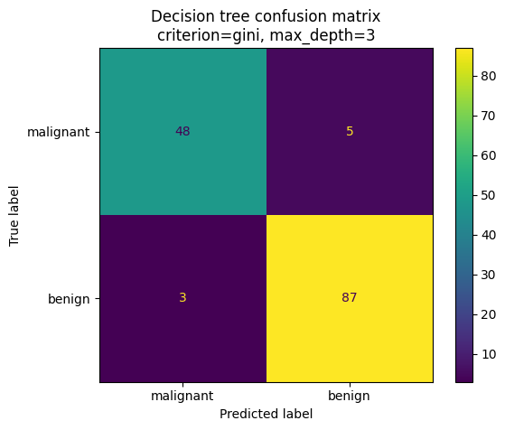
Final tree structure
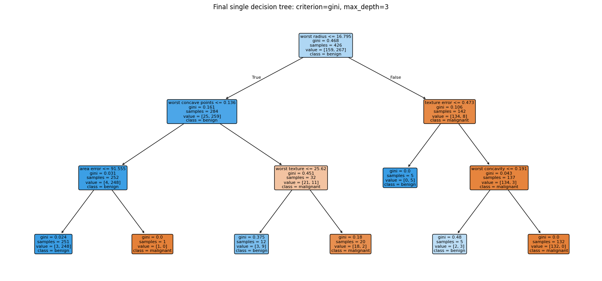
10. Capstone tasks - 20 minutes
Complete these tasks without changing the model family.
Task A — depth recommendation
Choose a maximum depth from 1 to 12. Defend the choice with at least three measurements.
Task B — feature importance audit
For your selected tree:
- List the five most important features.
- Find every node that uses the top feature.
- Sum that feature’s unnormalized node contributions.
- Verify that normalization reproduces
feature_importances_.
Task C — purity criterion comparison
At your chosen depth:
- Train one tree per criterion.
- Compare root split, leaves, accuracy, log loss, and top features.
- Explain why different impurity functions may lead to similar or different trees.
Task D — written synthesis
Write 150–250 words answering:
How do depth and purity criterion affect tree complexity, generalization, leaf purity, and impurity-based feature importance?
Capstone comparison table
| test_accuracy | test_log_loss | actual_depth | n_leaves | root_feature | top_5_features | |
|---|---|---|---|---|---|---|
| criterion | ||||||
| gini | 0.944056 | 0.876332 | 3 | 7 | worst radius | worst radius, worst concave points, texture er... |
| entropy | 0.951049 | 0.874367 | 3 | 7 | worst radius | worst radius, worst concave points, texture er... |
| log_loss | 0.951049 | 0.874367 | 3 | 7 | worst radius | worst radius, worst concave points, texture er... |
11. Key takeaways
max_depthdirectly limits how many successive decisions a path can contain.- Increasing depth usually lowers training impurity and raises training accuracy.
- Deeper is not automatically better: test performance can plateau or worsen.
- Gini, entropy, and log-loss criteria quantify class mixture differently.
- Criterion choice can change split features, thresholds, topology, predictions, and importances.
- Tree feature importance is normalized accumulated weighted impurity decrease.
- Importance depends on the fitted tree and should not be interpreted as causality.
- A useful tree balances predictive performance, stability, and interpretability.
References
Official scikit-learn documentation:
DecisionTreeClassifier- Decision Trees user guide
plot_treeload_irisload_breast_cancer- Tree structure example
- Impurity-based feature importance examples
The notebook intentionally uses only a single-tree classifier for model training.
Matteo Francia - Machine Learning and Data Mining (Module I) - A.Y. 2026/27